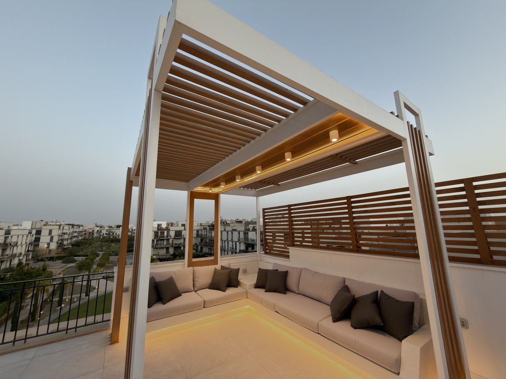

روف · سوديك كورتيارد، الجيزة
من الخرسانة لحد قعدة برّه كاملة: برجولة خشب بيتش باين، وكنبة وبار وكاونتر وحوض بيلت إن وترابيزة دوّارة، كلهم تيرازو اتصبّ في الموقع.

من أرض فاضية لمكان جاهز.



اسحب الخط وشوفها بتتحرك.


ترابيزة بتلف · بتتخبى جوّه كاونتر التيرازو


أخبرنا عن مكانك. نرسمه ونسعّره ونبنيه.
كلّمنا واتسابhello@ikdu.build